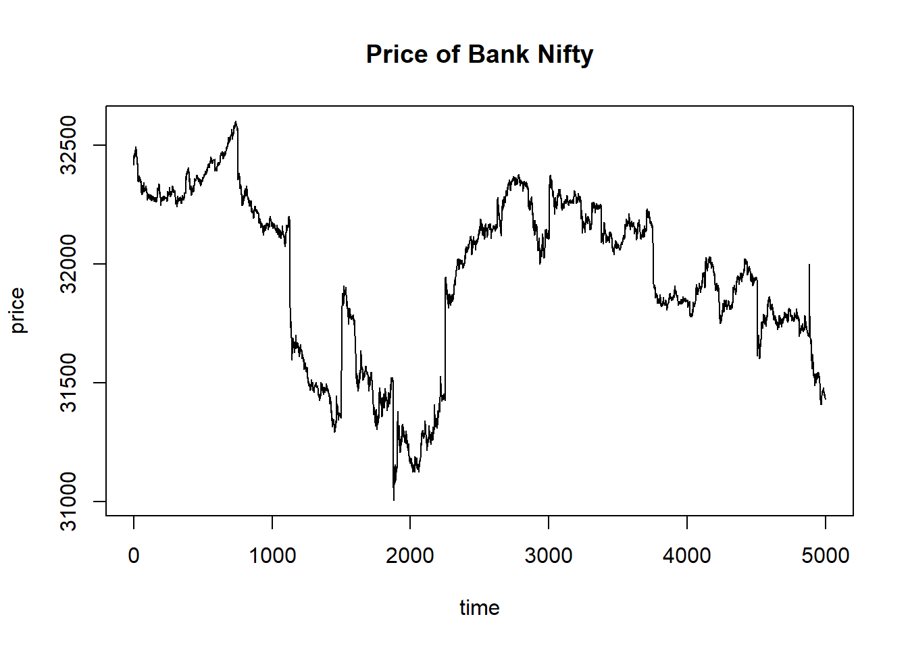
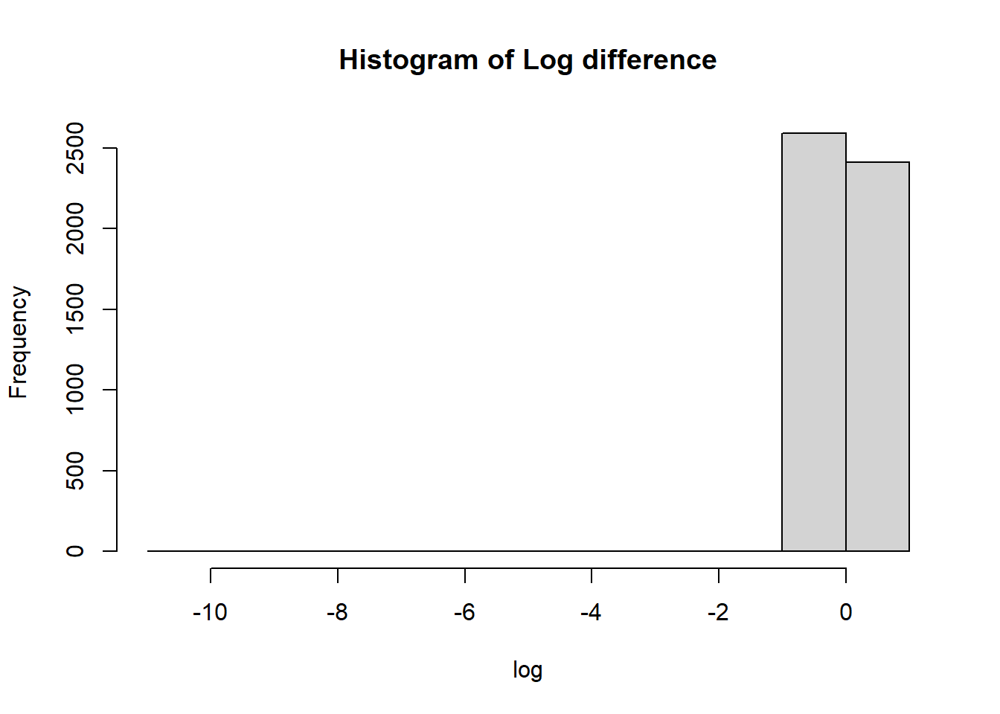
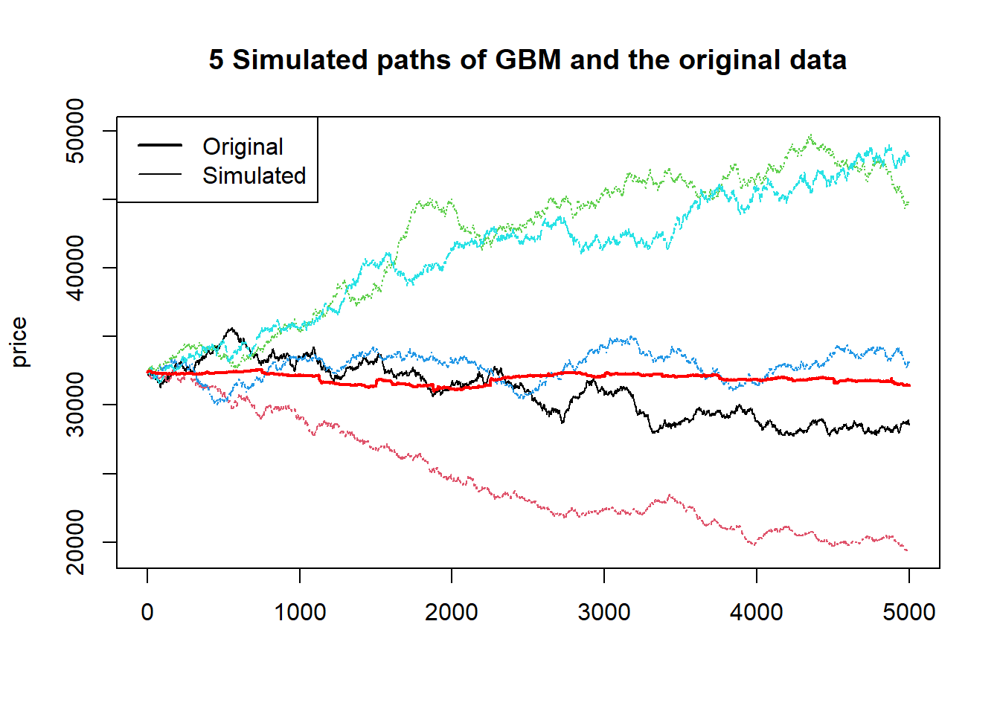
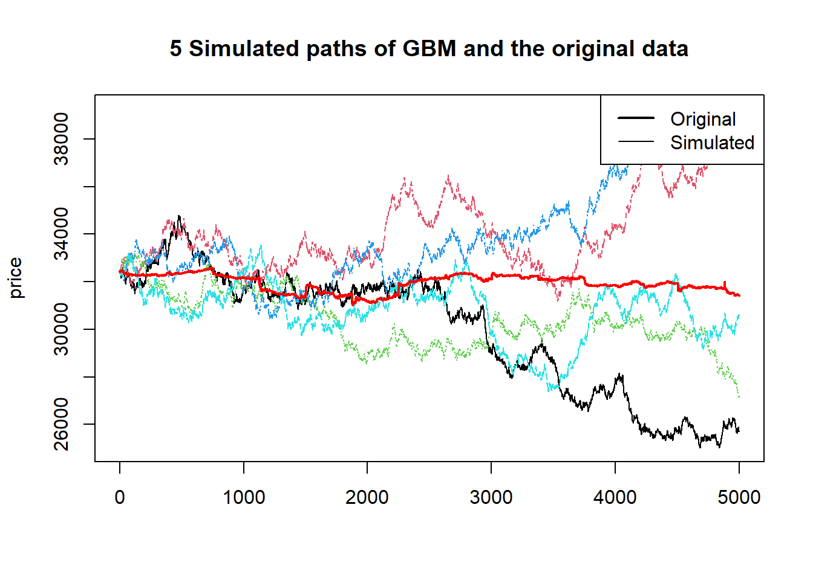
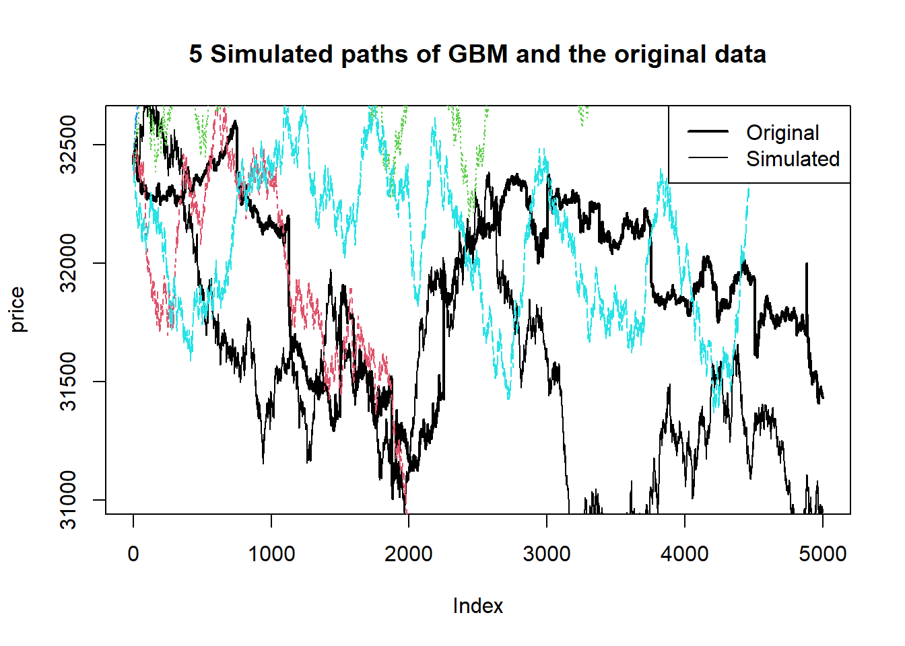
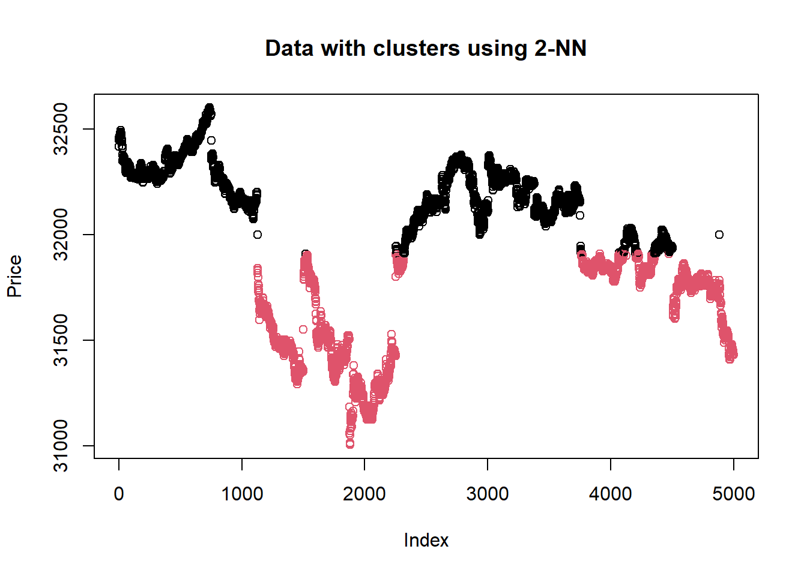

'data.frame': 5000 obs. of 8 variables:
$ DATE : Date, format: "2020-01-01" "2020-01-01" ...
$ TIME : POSIXct, format: "2024-11-07 09:15:00" "2024-11-07 09:16:00" ...
$ OPEN : num 32417 32457 32446 32445 32461 ...
$ HIGH : num 32465 32466 32452 32464 32474 ...
$ LOW : num 32354 32445 32445 32435 32457 ...
$ CLOSE : num 32456 32445 32445 32464 32465 ...
$ VOLUME: int 36240 18780 14900 18120 11540 9640 8480 8140 4840 10680 ...
$ OI : int 1304980 1304980 1316960 1316960 1316960 1328860 1328860 1328860 1337200 1337200 ...Stochastic Modelling of Stock Price Data
Introduction
Stock Price Modelling is a very well celebrated as well as challenging job for the people in industry as well as in academics. There are several approaches. In this paper we will implement stochastic modelling based on mainly a dataset of Bank NIFTY starting from 1st Jan,2020 and in each interval of 1 min. We have 5000 observations there. For the entire study, we will try to model Open Price throughout.
Data
Lets take a look over the data,
The scatter plot of the data ,

Modelling
Geometric Brownian Motion:
The SDE is,
\(dS_t=\mu S_tdt+\sigma S_tdW_t\) , where \(W_t ~\) ~Weiner Process.
Diagnostic:
Now our stock data to fit the GBM, we must have \(logS_t-logS_{t-1}\) follows normal distribution. We will diagnos it graphically using Histogram.

From Histogram it is evident that the data is not coming from a Normal population . Still we fit a GBM to see how it work.
Model fitting:
Method of Moment estimates:
Here we estimated the parametres of GBM using MOM estimates. We found,
| Parametre | Value |
|---|---|
| \[ \mu \] | -0.00208 |
| \[ \sigma \] | 0.1468849 |
Fit:

Goodness of fit test:
Here we are calculating the Chi- Square statistic based on a simulated path.
P-Value: 0Here the p-value for the test is coming as 0. That means the data is not fitting well in this case.
Maximum Likelihood Estimates:
Similarly as above but using MLE estimates of the GBM we fit it with our data. The estimates are,
| Value | Parametre |
|---|---|
| \[ \mu \] | -0.00208 |
| \[ \sigma \] | 0.14687 |
Fit:

Comaparison between two methods of estimation
MOM and MLE is performing almost equally in this data. The chi square test statistic for MOM is 1091429 whereas the value for the MLE is 1429156. So we may conclude that MOM estimate is relatively better working then MLE estimate.
Goodness of fit :
Similarly as above,
P-Value: 0The p-value is coming to be zero. Hence the fit is not good which is also evident from the plot itself.
Jump Diffusion Model:
From the plot of the data , we can see that there is several jumps in the data. So for modelling this kind of data, Jump Diffusion Model is very famous in literature.
Here the SDE is,
\[ dS_t=\mu S_tdt+\sigma S_tdW_t+JS_tdN_t \], where \(N_t\)~ Poisson process with parametre \(\lambda\) and \(J\) represents the jump size. Here we are modelling that, \(J\) follows logNormal(\(\mu_J,\sigma_j\))
Fit:
The fitting process involves three steps,
Fix a threshold, in practice 3- \(\sigma\) limits are taken.
Value of the price greater than the threshold are used to estimate the parametres for \(J\) and \(N_t\) . But we did’nt get reasonable output there. So we fine tune it to work better.
Value of the price lesser than the threshold are used to estimate the other parametres. Here also we took the same approach .

Goodness of fit:
P-Value: 0Here also the Goodness of fit Chi- Square test is giving p-value zero, hence the null hypothesis that the data is fitting the model is rejected.
Clustering:
As we are guessing that there may be some cluster there ,so we applied K- nearest neighbour method here with k=2.

The method also supports our claim as there are two cluster there.
Conclusion
So from the above analysis we get the impression that may be more sophisticated method applied on each cluster fit the data well. Or we can go for another Jump diffusions model to fit it well. But our simulated paths in the Jump diffusion model is pretty close representing our data.
Acknowledgement
I would like to express my sincere gratitude to Professor Abhik Ghosh and Sourojyoti Ghosh for their invaluable guidance and support throughout this work. Their insights and expertise in finance and modelling greatly enhanced my understanding and helped shape this assignment. I am also grateful to my friends for their encouragement and unwavering support.
Reference
- Hull, J. C. (2021). Options, Futures, and Other Derivatives (10th ed.). Pearson.
- Merton, R. C. (1976). Option Pricing When Underlying Stock Returns Are Discontinuous. Journal of Financial Economics, 3(1-2), 125-144.
- 3 Blue 1 Brown (YouTube Channel)
Comments on fit:
We saw that both the model fails to give satisfactory fit to our data. Now we will discuss about the two methods seperately.
GBM:
GBM usually simulate data to be increasing manner. So its highly unlikely for real world data to get fitted well. But if the time interval is very small or the time gap between two observation is fairly large , then it can be assumed that there is not such jumps in that case. So we can assume that in that case GBM may be a good fit to the data. Actually, for stable market GBM works well. Here our log return was far from normality and also we had some jumps in the data, so the GBM approach failed.
Jump Diffusion Model :
In literature , Jump Diffusion Model and its extensions are widely used for modelling the data with jumps. But here we are using the basic model. It is capturing the jump but due to high variability it is not efficient.
Clustering:
We tried KNN clustering also. It was giving us two clusters, one in the first and last with relatively high values and one in the middle with the low values. We may extend it to model this clusters seperately.